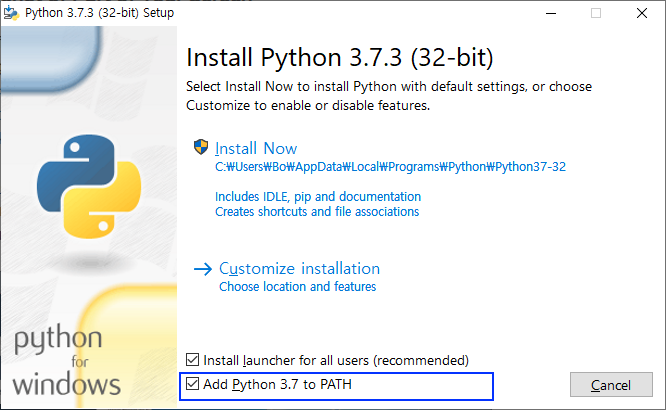

Log Export Script Guide¶
Last updated: Apr 15th, 2019
Overview¶
- This script is able to export log from TUNE and Branch, but export from TUNE will be stop on Apr. 30.
- Compatible only Python v3.7.x.
- Currently user level app access restriction is not supported for now. Please be careful when sharing API key.
- For now maximum 2-mil records are returned per one request. So if 2-mil records are returned, it means there would be more than 2-mil records within the request date range. For this case, please divide calls to shorter date range, or divide per event.
- Installation Video (Temporary)
1. Install Python¶
-
** Install Python 3.7.x from below link. This script is not compatible with Python 2.x.**
-
Mac: N/A
-
*Windows: NOTE
- Check
Add Python 3.7. to PATHin the bottom of the installer window.

- Check
2. Verify Python installation.¶
- Mac: 2.x is install by default. We need to additionally install 3.x.
pythoncommand run Python 2.x interpreter,python3command run Python 3.x interpreter.- Please verify installed Python version with below command.
Bo-hyungs-MacBook:log son$ python --version Python 2.7.10 Bo-hyungs-MacBook:~ son$ python3 --version Python 3.7.3
- Windows: Python is not installed by default. Once install Python 3.7, you can run Python 4.x using
pythoncommand.- Please verify installed Python version with below command.
C:\Users\Bo>python --version Python 3.7.3
- Please verify installed Python version with below command.
3. Verify PIP installation.¶
- PIP is Python's package(library) installation too. please verify whether PIP is properly installed.
- Mac: Use
python3command.- Please verify PIP installation with below command.
Bo-hyungs-MacBook:~ son$ pip3 --version pip 19.0.3 from /Library/Frameworks/Python.framework/Versions/3.7/lib/python3.7/site-packages/pip (python 3.7)
- Please verify PIP installation with below command.
- Windows: Use
pythoncommand.- Please verify PIP installation with below command.
C:\Users\Bo>pip --version pip 19.0.3 from c:\users\bo\appdata\local\programs\python\python37-32\lib\site-packages\pip (python 3.7)
- Please verify PIP installation with below command.
4. Install requests package.¶
-
requestsis a package required for this script, please install this package before running the script. -
Mac: Use
pip3command- Use below command
Bo-hyungs-MacBook:log son$ pip3 install requests
- Use below command
- Windows: Use
pipcommand- Use below command
C:\Users\Bo\log>pip install requests
- If above command fails, please retry after below command.
C:\Users\Bo\log>pip install --trusted-host pypi.python.org --trusted-host files.pythonhosted.org --trusted-host pypi.org python-certifi-win32
- Use below command
5. Running script.¶
- Please read configuration guide in below in advance, before running the script.
- Create a folder, and store all the below files in it.
- File list:
export.py, config.json, fields_install.csv, fields_event.csv, fields_open.csv
- File list:
- Move to the folder where the files are located.
- Mac : Run Terminal with
terminalcommand, and move to the folder withcdcommand. - Windows : Run Command Prompt with
cmdcommand, and move to the folder withcdcommand.
- Mac : Run Terminal with
-
Mac: User
python3command- Default Configuration
- If there is no additional params, scirpt export
installlog usingconfig.jsonfile in the same folder. - Below two sample commands are identical.
Bo-hyungs-MacBook:log son$ python3 export.py Bo-hyungs-MacBook:log son$ python3 export.py --config config.json --log install
- If there is no additional params, scirpt export
-
Explicitly specify configuration file.
- specify config file with
--configas below sample.Bo-hyungs-MacBook:log son$ python3 export.py --config config2.json
- specify config file with
-
Explicitly specify log to export
- specify log to export with
--logas below sample. - 3 examples for export of
install,event,openlog.Bo-hyungs-MacBook:log son$ python3 export.py --log install Bo-hyungs-MacBook:log son$ python3 export.py --log event Bo-hyungs-MacBook:log son$ python3 export.py --log open
- specify log to export with
- Default Configuration
-
Windows: Use
pythoncommand.- Default Configuration
- If there is no additional params, scirpt export
installlog usingconfig.jsonfile in the same folder. - Below two sample commands are identical.
C:\Users\Bo\log>python export.py C:\Users\Bo\log>python export.py --config config.json --log install
-
Explicitly specify configuration file.
- specify config file with
--configas below sample.C:\Users\Bo\log>python export.py --config config2.json
- specify config file with
-
Explicitly specify log to export
- specify log to export with
--logas below sample. - 3 examples for export of
install,event,openlog.C:\Users\Bo\log>python export.py --log install C:\Users\Bo\log>python export.py --log event C:\Users\Bo\log>python export.py --log open
- specify log to export with
6. Script Configuration¶
- Python script :
export.py -
Configuration file:
config.json-
Sample : JSON
{ "advertiser.name": "HelloWorld", "advertiser_id": "112233", "api_key" : "YOUR_API_KEY", "start_date": "2019-04-10", "days": "", "hours": "", "timezone": "Asia/Seoul", "filter_site_ids": ["1111", "222222"], "filter_site_event_names": ["purchase"], "branch_redirect": "" } -
advertiser.name(Optional) : Name of advertiser. advertiser_id(Required) : Site ID of advertiser.- Check out from
[ACCOUNTS]-[Advertiser Account]-[Details]in TUNE dashboard
- Check out from
api_key(Required) :- Selected user from
[ACCOUNTS]-[Users]in TUNE dashboard, and check outAPI Keystab. - Only API Key created before app migration works from both system. Newly created API keys will be only work on TUNE system.
- If you need to create new key please reach out to support team (support@branch.io).
- Selected user from
start_date(Required) :YYYY-MM-DDorYYYY-MM-DDTHH-MM-SSformat.YYYY-MM-DDTHH-MM-SSonly required only when you export log file for 1 hour range.- Ex)
2019-04-15 - Ex)
2019-04-05T00:00:00 - Ex)
2019-04-05T01:00:00
days,'hours(One of the two are required) :- Specify the range from
start_date.end_datepicked using this value. - Should set one between
daysorhours, if both are setdaysvalue is used. - For no filtering: Please set like
"days": "","hours": ""
- Specify the range from
timezone(Required) :- Timezone database page: use valuse in
TZ database namecolumn. - Value for Korea standard time is
Asia/Seoul, value for UTC isUTC.
- Timezone database page: use valuse in
filter_site_ids(Required) :- Only set if you would like to export specified apps. All the apps logs are export when not set.
- For no filtering:, set like
"filter_site_ids": [] - If filtering is needed: please enclose IDs with double-quote and delimit with comma like
"filter_site_ids": ["111111", "222222"]
filter_site_event_names(Required) :- Only used for event log export.
- For no filtering: Set like
"filter_site_event_names": [] - If filtering is needed: please enclose event names with double-quote and delimit with comma like
"filter_site_event_names": ["purchase", "login"]
branch_redirect(Required) :- Specify system to export log.
- Export from TUNE:
"branch_redirect": "" - Export from Branch:
"branch_redirect": "3"
-
7. Field configuration¶
- Files:
fields_install.json,fields_event.json,fields_open.json - Sample
created id status status_code mat_id google_aid os_id ios_ifa ios_ifv #platform_aid
- Three config files should exist within the same folder with the script.
- Per each log, field configuration file's name starts with
fields_prefix. - Use field names from from header row in csv file export from TUNE dashboard.
- List app each field to export one in one line.
- You can temporarily exclude specific fields by put
#in front of the field name. - You can freely add empty row.
8. Filename of exported log.¶
DATA_SOURCE_ADVERTISER_NAME_ADVERTISER_ID_LOG_NAME_START_DATE_END_DATE_TIMEZONE_EXPORT_JOB_ID.csv